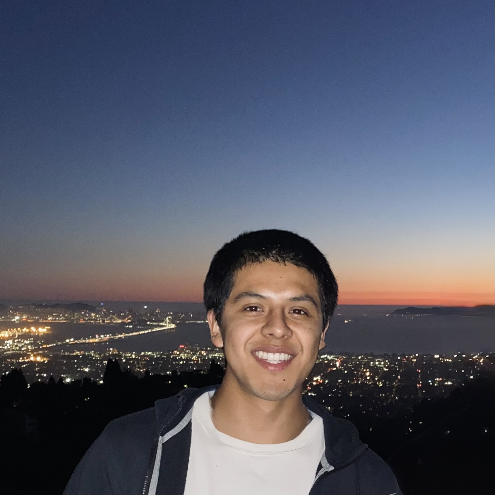

about me
I majored in government with a focus in technology science at Harvard, where I discovered my passion for solving social problems with people-centered solutions. My academic pursuits trained me to critically evaluated the existing paradigm around technology deployment and how it may challenge American values and principles.
My professional experiences forged me into a generalist, but I have a keen interest in helping growing technology businesses develop, refine, and implement their go-to-market operations. My stint at a TMT-focused strategy consulting firm helped me build a technical and qualitative toolkit to solve business challenges collaboratively. My internships and recent advisory roles at HP, Meta, and Aprende Institute taught me the importance of bridging strategy with the client experience - the space where go-to-market teams live. My experiences in technical and client-facing teams help me communicate effectively with diverse team members.
In my free time I keep up with psychology and demographic trends and am currently learning how human-AI interaction is changing socialization and political dynamics. I played club soccer growing up and trained for marathons in high school. I now enjoy weightlifting and running 5Ks (19 min PB). I’m always on the hunt for the best espresso shot (currently
I am a practicing Catholic. I always have time to talk about my faith, Real Madrid, and music.